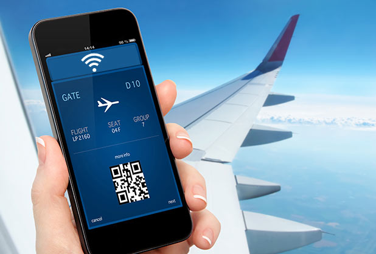

Más allá de las pruebas en laboratorios, la tecnología LiFi todavía está lejos de llegar a los hogares de los usuarios. Por el momento, el LiFi se queda en determinados casos de uso, principalmente empresas y mercados profesionales. Es el caso de las nuevas bombillas Trulifi de Signify, presentadas hace unas semanas. Son capaces de alcanzar los 250 Mbps, pero están pensadas para lugares como hospitales o aeropuertos. Dado que la tecnología LiFi no tiene interferencia de radiofrecuencia, algunas aerolíneas como Air France han mostrado interés y presentaron en Le Bourget una maqueta de cabina con LiFi power, su programa para ofrecer dicha conectividad in flight. Entre las ventajas citadas, destacan el aumento de velocidad y la reducción de cableado a bordo.
